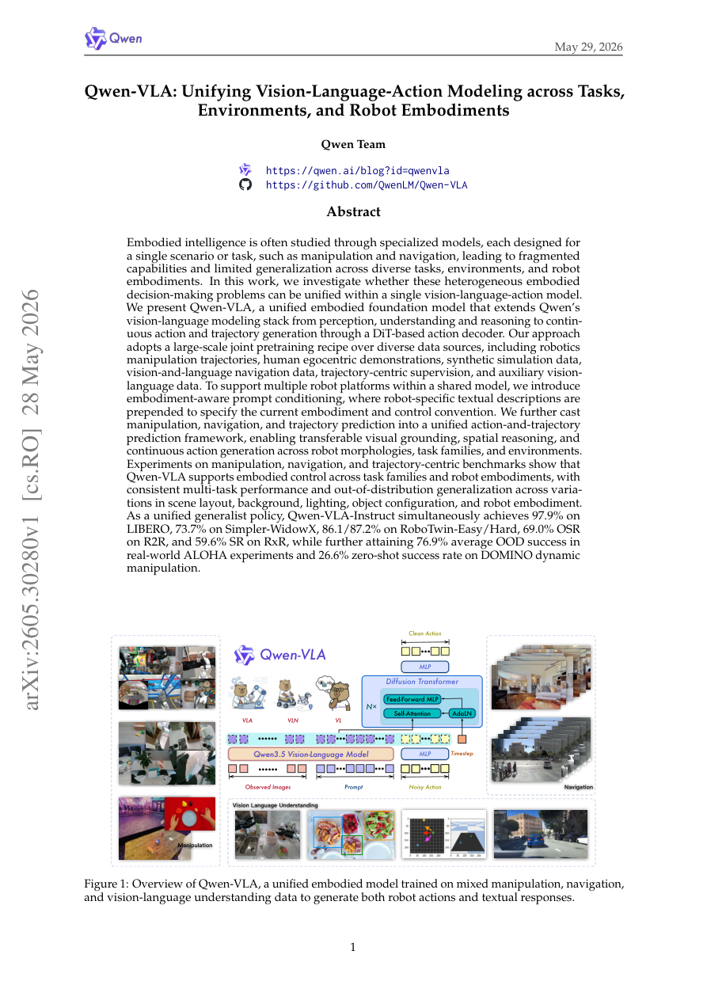

#1
★ 9/10
Qwen-VLA: Unifying Vision-Language-Action Modeling across Tasks, Environments, and Robot Embodiments
Qwen-VLA：统一跨任务、跨环境、跨机器人形态的视觉-语言-动作建模

图 Figure · Page 1 of paper
🎯 一个模型，搞定所有机器人任务
One unified AI model controls any robot across manipulation, navigation, and beyond.
🗣️ 一句话比喻 · Plain-English Analogy就像以前出行要带地图、指南针、翻译手册三件套，而现在一部智能手机全搞定——Qwen-VLA就是机器人世界里的那部"超级智能手机"，不管你是双臂机械手还是导航小车，它都能一脑通吃。Think of it like going from needing a separate GPS, a language translator, and a driving instructor for every new car you drive — to one universal co-pilot app that works perfectly no matter what vehicle you're in. Qwen-VLA is that universal co-pilot, but for robots.
| 维度 | 中文 | English |
|---|---|---|
| ❓ 待解决 的问题 |
现有的机器人AI模型通常只能做一件事——比如只会抓东西，或只会导航，换个任务或换个机器人就完全不行了。就像你家里的洗碗机、扫地机器人、微波炉各自为政，没有一个"万能管家"能把所有活都干了。研究者们希望找到一个统一的AI大脑，能让不同形态的机器人完成各种各样的任务，而不是为每个任务单独训练一个模型。 | Most robot AI models are narrow specialists — one model for grabbing objects, another for navigating rooms, and they completely fall apart on new tasks or different robot bodies. It's like hiring a separate worker for every single chore in your house, and none of them can cover for each other. Researchers want a single "universal robot brain" that can handle any task, in any environment, on any robot body. |
| 💡 解决 的亮点 |
• 统一框架：将机械臂操作、室内导航、轨迹预测三类任务统一到同一个模型中，不再各自为政。 • 具身感知提示：通过文字描述告诉模型"你现在是哪种机器人、用什么方式控制"，让同一个AI大脑驱动不同形态的机器人。 • DiT动作解码器：在强大的语言理解基础上，加入一个专门生成连续动作和运动轨迹的模块，让AI不只会"看懂"，还会"动起来"。 • 超大规模联合预训练：融合机器人操作数据、人类第一视角演示、合成仿真数据、导航数据等多种来源，大幅提升泛化能力。 | • Unified task framework: Manipulation, navigation, and trajectory prediction are all handled by one single model — no more siloed specialists. • Embodiment-aware prompting: The model reads plain-text descriptions of which robot it's controlling, allowing the same AI brain to drive totally different robot bodies. • DiT-based action decoder: A special module is added on top of a powerful vision-language model to generate smooth, continuous physical movements — bridging understanding and action. • Large-scale joint pretraining: Trained on a rich mix of robot data, human egocentric videos, simulation data, and navigation datasets for broad generalization. |
| 🧪 实验 内容 |
研究者在多个权威机器人基准上测试了Qwen-VLA，涵盖操作类（LIBERO、Simpler-WidowX、RoboTwin、真实ALOHA机器人）、导航类（R2R、RxR视觉-语言导航）以及轨迹预测类（DOMINO动态操作）。他们与各领域专用模型进行比较，并特别设计了场景布局、背景、光照、物体配置、机器人形态等方面的分布外（OOD）泛化测试，以评估模型面对新情境时的适应能力。 | The team tested Qwen-VLA on a wide range of standard robot benchmarks: manipulation tasks (LIBERO, Simpler-WidowX, RoboTwin, real-world ALOHA robot), vision-and-language navigation (R2R and RxR), and trajectory-centric prediction (DOMINO dynamic manipulation). They compared against task-specific specialist models and ran dedicated out-of-distribution (OOD) tests involving new scene layouts, lighting changes, background shifts, object configuration changes, and different robot bodies to stress-test generalization. |
| 📊 实验 结果 |
• LIBERO操作基准：97.9% 成功率 • Simpler-WidowX操作：73.7% 成功率 • RoboTwin-Easy / Hard：86.1% / 87.2% 成功率 • R2R视觉导航：69.0% OSR（路径成功率） • RxR多语言导航：59.6% SR（成功率） • 真实ALOHA机器人OOD实验：平均76.9% 成功率 • DOMINO动态操作零样本测试：26.6% 成功率（零样本，难度极高） | • LIBERO manipulation benchmark: 97.9% success rate • Simpler-WidowX manipulation: 73.7% success rate • RoboTwin-Easy / Hard: 86.1% / 87.2% success rate • R2R vision-language navigation: 69.0% OSR • RxR multilingual navigation: 59.6% SR • Real-world ALOHA robot OOD experiments: 76.9% average success rate • DOMINO dynamic manipulation zero-shot: 26.6% success rate (zero-shot, extremely challenging) |
| 🏁 结论 | Qwen-VLA证明了一个统一的视觉-语言-动作基础模型可以同时出色地完成机器人操作、导航和轨迹预测等多类任务，并在面对新环境、新机器人形态时展现出强大的泛化能力，打破了"一任务一模型"的传统局限。 | Qwen-VLA proves that a single unified AI model can master manipulation, navigation, and trajectory prediction all at once, generalizing robustly to unseen environments and robot bodies — breaking the long-standing belief that each robot task needs its own specialized model. |
| 🔗 论文 链接 |
arXiv: 2605.30280v1 · 📥 PDF | |
⚙️ Method · 方法详解
Qwen-VLA以阿里巴巴的Qwen视觉-语言大模型为基础"大脑"，负责看懂图像、理解指令、进行推理。在这个大脑之上，研究者加入了一个基于DiT（扩散变换器）的动作解码器，就像给大脑接上了一双"手"，能将理解转化为连续的物理动作和运动轨迹。为了让同一个模型驾驭不同的机器人，他们设计了"具身感知提示"机制——用一段文字告诉模型"你现在是双臂机械手，用关节角度控制"，模型就能自动适应。训练时，将机器人操作、人类示范、仿真数据、导航数据等多种数据源混合在一起进行大规模联合预训练，再经过指令微调，使模型在各类任务上都表现出色。
Qwen-VLA starts with Qwen's powerful vision-language model as its "brain" — it can see, read instructions, and reason about the world. On top of that, researchers attach a DiT-based action decoder, like giving the brain a pair of hands that can translate thoughts into smooth, real-world physical movements. To handle different robot bodies, they use "embodiment-aware prompting" — a short text description tells the model what kind of robot it's running on and how it's controlled, so the same AI adapts automatically. The whole system is trained on a massive, diverse mixture of robot trajectories, human first-person videos, simulated data, and navigation datasets, then fine-tuned with instructions to polish performance across all task types.
🌟 Why It Matters · 为什么重要
这项研究向"通用机器人大脑"迈出了重要一步——未来家用机器人、工厂机器人、服务机器人或许只需一套AI系统，就能胜任各种任务，大幅降低研发成本。对于整个AI和机器人行业来说，这种统一框架的思路有望成为下一代具身智能的标准范式。
This work is a major step toward a true "general-purpose robot brain" — in the future, one AI system could power home robots, factory arms, and service robots all at once, slashing development costs and complexity. For the broader AI field, this unified approach could become the blueprint for next-generation embodied intelligence.